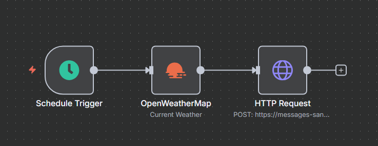

Sobre Mim
Profissional com sólida base técnica e experiência prática em integrações com n8n, automações, manutenção de computadores, redes e programação. Forte capacidade de resolução de problemas técnicos, com perfil proativo, voltado para resultados e em constante atualização acadêmica e profissional.
Experiência Profissional
Programador n8n
Noname Mai 2025 - Atual- Criação de automações com a ferramenta n8n
- Integração de APIs e sistemas diversos
- Otimização de processos internos
- Suporte técnico a usuários
- Confecção de UI e UX
Técnico de Informática
Fox Informática Jun 2024 - Mai 2025- Montagem e manutenção de computadores e notebooks
- Instalação de sistemas operacionais e softwares
- Suporte técnico presencial
- Configuração e manutenção de redes locais
Habilidades Técnicas
JavaScript
Python
Java
C++
n8n
REST APIs
MySQL
Hardware
Software
Redes
Formação Acadêmica
Graduação em Inteligência Artificial
FIAP Ago 2025 - AtualTécnico em Informática
SENAC Taboão da Serra Out 2023 - Abr 2025Meus Projetos

Buscador de Vagas
Aplicação web para busca de oportunidades de emprego, permitindo filtrar por cargo e localidade. Desenvolvido para ser uma ferramenta prática e de fácil utilização.
Ver Projeto

Automação de Previsão do Tempo
Workflow em n8n que busca a previsão do tempo diariamente e envia um resumo via mensagem de WhatsApp.
Próximo Projeto
Novas soluções e automações estão sempre em desenvolvimento. Fique de olho!